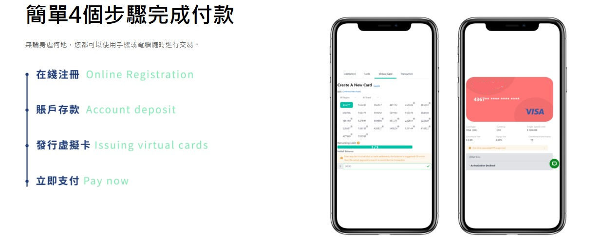

兄弟我从事虚拟信用卡行业数年有余，深知各位老板在虚拟卡方面的支付场景及需求痛点。我与市面上长期稳定靠谱的虚拟卡开卡平台有密切合作，无论在价格还是适用场景上都会为您甄选适合的虚拟信用卡开卡平台。
卡头方面，兄弟我这里的卡BIN资源很丰富，美国、英国、香港、新家坡、英国卡头都有，足以满足您的各种国际在线支付场景。
价格方面，不一定是最便宜的，但是最划算的。目前虚拟卡行业太卷了，时常有价格战，有些平台看赚不到钱了，最后心一黑，卷钱跑路的案例不胜枚举。您开了那么多张卡，都已经绑到成千上万的账号上了，再让您一个个解绑换卡，这特么也太操蛋了，账号不被风控才怪，稳定压倒一切。
开户方面，如今电信诈骗如此猖獗，个人信息极其宝贵，我这里的虚拟卡平台仅需邮箱注册，无需KYC，并且支持USDT加密货币或美元转账充值，最大程度保护用户隐私安全。
除了跨境电商、FB广告外、用于当下热门的AI人工智能付费订阅也都是妥妥的，例如ChatGPT、Claude等。
若您有需要，敬请随时联系我，为您提供虚拟卡方面的各种咨询服务，适配最优选的开卡渠道。另外我这里拥有全球最精准的卡BIN数据库，如需查询卡BIN信息，我这里也可以免费提供服务，都是搞支付的，交个朋友嘛。
Telegram：@vccbus

问：可以充值ChatGPT、Claude这些AI人工智能的付费订阅吗？
答：可以的，美国那些AI人工智能在访问IP线路及付款卡发卡地方面做了限制，美国虚拟卡、英国虚拟卡都是可以订阅的，香港虚拟信用卡则不行。
问：充值Youtube频道会员可以吗？
答：大部分卡头都可以，少部分卡头则不行。
问：你们的虚拟卡费率高吗？是全网最便宜的吗？
答：关于费率问题，您可以添加我的联系方式详细咨询，不能说是最低的，但也比较划算。如果您是用于Facebook广告费支付的，消耗量比较大，价格可以谈的。
问：支持用于购买加密货币虚拟币吗？
答：不支持的，仅限常规的国际在线支付场景，例如跨境电商、广告营销、付费订阅等合规用途，不支持一些金融类商户。
问：能用于支付谷歌商店、谷歌开发者账号、GCP谷歌云这些吗？
答：当然可以，这些都是基本操作。
问：可以用于支付亚马逊开店月租吗？
答：支付是可以的，但是凭良心讲，您若打算长期认真经营一个跨境店铺，建议用您的实体银行卡支付亚马逊店租。虚拟信用卡推荐用于注册亚马逊买家号或者批量注册店铺使用。
问：我冲进去的钱，如果后续不打算用了，可以提现吗？
答：这是最基本的，不打算用我们平台了，可以联系客服申请提现，平台不会坑您的血汗钱。
问：开卡起充金额有要求吗？
答：目前各个虚拟卡平台对开卡都有一个最低起充金额限制，通常是20美元左右，这也是为了过滤掉一些羊毛党，维护平台长久稳定运营的一种措施。
问：如何联系客服？
答：页面右上角有客服联系方式，24小时在线值守，随时处理您的用卡问题。
问：支持AliExpress速卖通下单吗？
答：支持的，很多跨境电商老板都是在速卖通采购的，平台的卡片支持速卖通下单采购。
问：订阅ChatGPT被拒是怎么情况？
答：上面我说了，这些美国AI除了审查支付的发卡地外，还检测IP地址，如果IP不是所支持的国家，或者与虚拟信用卡发卡国不相符，可能就会出现被风控，支付失败的情况。建议使用干净原生的美国IP线路，配合美国虚拟信用卡，减少被拒的概率。
问：可以直接购买现成的Visa卡号吗？
答：不可以的，这里提供虚拟卡开卡平台，您自行注册账号、充值、开万事达Visa虚拟卡即可。
问：有没有1刀验证卡？
答：知道你是用来注册账号薅羊毛的，我这里没这业务哦，都是需要充值正常消费的，没这种一刀金额的散卡。
问：能用于航旅OTA预定吗？
答：可以的，常见的例如订阅国际机票、酒店、演唱会门票等，我们有一些国际旅行社客户合作的。
问：能做美国电商平台CT业务吗？
答：不能哦！仅支持合规付款场景，不能大量退款的。
问：可以匿名开卡吗？
答：目前电信网络诈骗太猖獗了，为保护用户隐私，USDT充值可无需KYC。